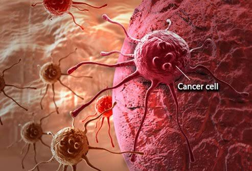
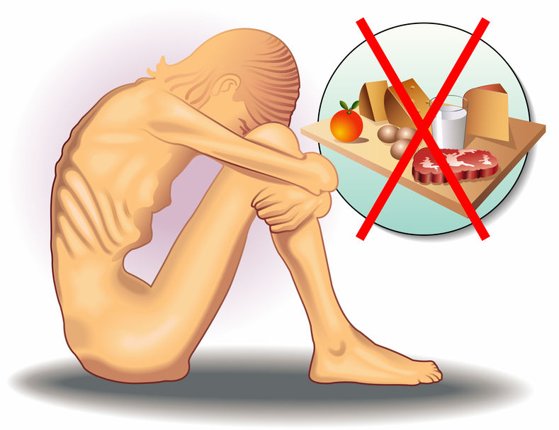

| 1 | Sobrepeso y obesidad: Causados por el consumo excesivo de calorías, grasas saturadas, azúcares y alimentos ultraprocesados. Son la antesala de otros padecimientos metabólicos. |
Cáncer colorrectal, de mama y de hígado: Instituciones de salud asocian el consumo habitual de carnes procesadas (embutidos), carnes rojas en exceso, alcohol y harinas refinadas con una mayor propensión a desarrollar tumores malignos.  |
|---|---|---|
| 2 | La anemia nutricional es una afección provocada directamente por una mala alimentación o desnutrición, en la cual el cuerpo carece de los glóbulos rojos sanos o la hemoglobina necesarios para transportar eficientemente oxígeno a todos los órganos y tejidos. |
Gastritis y reflujo: El consumo frecuente de alimentos muy condimentados, irritantes, fritos o saltarse las comidas altera los ácidos estomacales y daña la mucosa gástrica. |
| 3 |  Desnutrición y carencias: La falta de nutrientes esenciales provoca anemia, pérdida de masa muscular (sarcopenia), fatiga crónica y un sistema inmunológico debilitado. |
Desnutrición y carencias: La falta de nutrientes esenciales provoca anemia, pérdida de masa muscular (sarcopenia), fatiga crónica y un sistema inmunológico debilitado. |
Composición corporal y rendimiento• Pérdida de grasa corporal: Reducir el tejido adiposo de forma saludable y sostenible, preservando la masa muscular. |
Salud clínica y prevención• Control de enfermedades crónicas: Monitorear y mejorar marcadores bioquímicos en condiciones como diabetes, hipertensión, hígado graso o dislipidemias (colesterol y triglicéridos altos). |
Educación y relación con la comida• Reeducación alimentaria: Aprender a leer etiquetas nutricionales, planificar compras semanales y entender el tamaño de las porciones. |
|---|